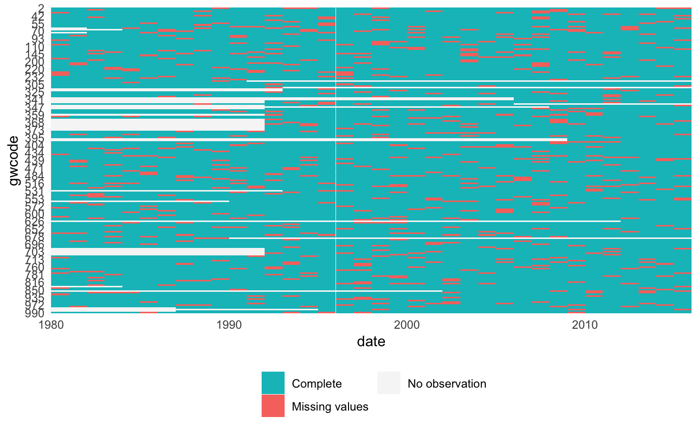
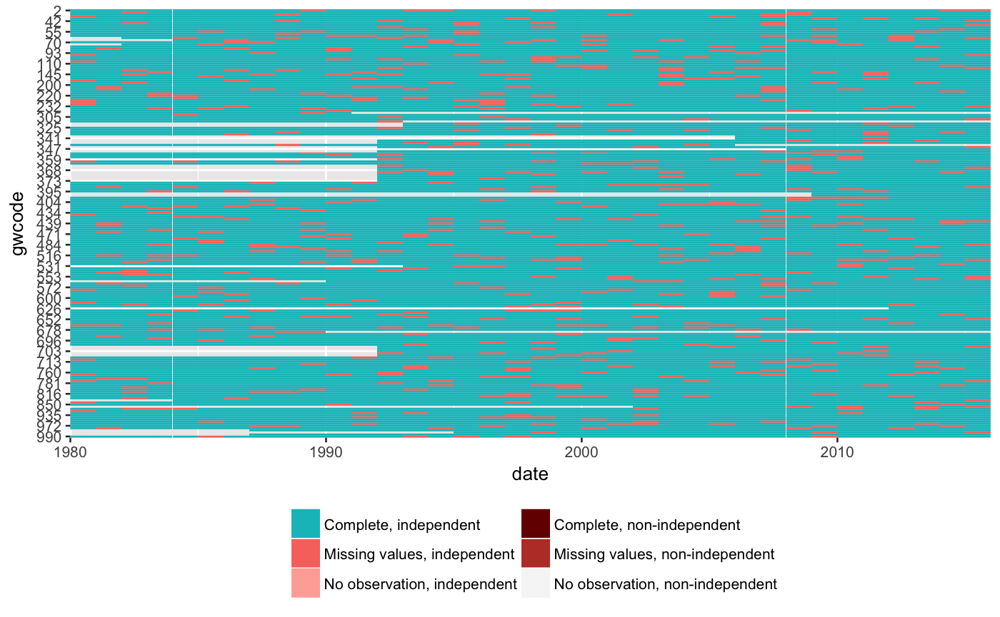

Plot missing values by country and date, and additionally identify country-date cases that do or do not match an independent state list.
plot_missing(x, data, space, time, time_unit, statelist = c("none", "GW", "COW")) missing_info(x, data, space, time, time_unit, statelist = "none")
| x | Variable names(s), e.g. "x" or c("x1", "x2"). |
|---|---|
| data | State panel data frame |
| space | Name of state identifier |
| time | Name of time identifier |
| time_unit | Temporal resolution character string, e.g. "year" or "month".
See details in |
| statelist | Check not only missing values, but presence or absence of observations against a list of independent states? "none" or "GW" or "COW". |
missing_info provides the information that is plotted with
plot_missing. The latter returns a ggplot, and thus can be chained
with other ggplot functions as usual.
cy <- state_panel(as.Date("1980-06-30"), as.Date("2015-06-30"), by = "year", useGW = TRUE) cy$myvar <- rnorm(nrow(cy)) cy$myvar[sample(1:nrow(cy), nrow(cy)*.1, replace = FALSE)] <- NA str(cy)#> 'data.frame': 6654 obs. of 3 variables: #> $ gwcode: int 2 2 2 2 2 2 2 2 2 2 ... #> $ date : Date, format: "1980-06-30" "1981-06-30" ... #> $ myvar : num -1.40004 0.25532 -2.43726 -0.00557 0.62155 ...head(missing_info("myvar", cy, "gwcode", "date", "year", "none"))#> gwcode date independent missing_value status #> 1 2 1980-06-30 NA FALSE Complete #> 2 20 1980-06-30 NA FALSE Complete #> 3 31 1980-06-30 NA FALSE Complete #> 4 40 1980-06-30 NA TRUE Missing values #> 5 41 1980-06-30 NA FALSE Complete #> 6 42 1980-06-30 NA FALSE Completeplot_missing("myvar", cy, "gwcode", "date", "year", "none")# Check data also against G&W list of independent states head(missing_info("myvar", cy, "gwcode", "date", "year", "GW"))#> gwcode date independent missing_value status #> 1 2 1980-06-30 1 FALSE Complete, independent #> 2 2 1981-06-30 1 FALSE Complete, independent #> 3 2 1982-06-30 1 FALSE Complete, independent #> 4 2 1983-06-30 1 FALSE Complete, independent #> 5 2 1984-06-30 1 FALSE Complete, independent #> 6 2 1985-06-30 1 FALSE Complete, independentplot_missing("myvar", cy, "gwcode", "date", "year", "GW")# To check all variables: # plot_missing(setdiff(colnames(df), "space", "time"), ...)